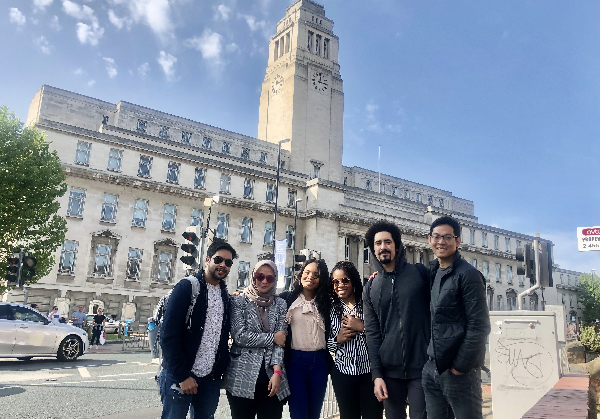

About Me
Early Years
For ages, electricity, and magnetism have perplexed even the most knowledgeable, arousing even the nonpartisan into pondering about it. Although, these phenomena have been known to man for thousands of years, yet a new revelation unfolds with each passing hour. Since juvenescence my curiosity remained insatiable, resulting in the partial or complete destruction of many household electronic devices and machines. I acquired these traits from my dad who himself is a principal scientist and Dean in one of the leading public universities of the country who abetted me in my curious endeavors. My first encounter with electricity was at the tender age of 4 when my curiosity almost got me electrocuted as I poked my baby fingers into a power socket. Rather than being terrified, I got fascinated by electrical energy. During high school, I designed a solenoid motor, a design I hold very dear, and thus decided to gain more knowledge about electrical machines.
Bachelors

I joined SRM IST for my bachelor's as it had a lot of technical and non-technical clubs and an ABET accreditation in the Department of Electrical Engineering. Instead of focusing just on curriculum, I decided to leverage other opportunities my university had to offer. Thus, I joined NCC through which I represented my City in a state rifle-shooting competition. Working there, I acquired essential qualities such as leadership and teamwork while understanding the importance of mental strength and inculcated a never-say-die attitude. I also worked as an Electrical lead at University's official team, Infieon Supermileage (ISM) that participated in Shell Eco Marathon Asia(SEM-Asia). During my tenure, our vehicle got special mentions for technical innovation in Singapore and a podium finish at SEM-India. To help people, I joined an NGO, EWB (Engineers without borders). Later, I was appointed as the President of EWB-SRM. During my tenure, I did multiple technical and non-technical projects, one of which was analyzing the discharge of PM2.5 due to different classes of vehicles. Findings from our work resulted in the barring of trucks in a populated area. I also organized 2 national conferences on energy. Participation in all these extra activities simultaneously affected my grades but developed my technical and intrapersonal skills. Academically, I interned at an electrical distribution center and at a substation that helped me transform my theoretical knowledge about the transmission and distribution of energy into a practical one. During my 3rd year, I conducted a seminar on sensors used in IC engines, which helped me overcome stage fear, I also did a multi-disciplinary group project, analyzing the most efficient motor for a saloon car using MATLAB, and later another project on IOT based jewelry theft prevention and detection system. But for my undergraduate thesis, I wanted to do something for the local community, and since my city was inhabited by a large population of low-income fish farmers, who depended on low-yielding archaic farming methods, my 3 membered project team decided to tackle this issue. We developed a low-cost, stand-alone PV fed DIDO system for real-time analysis and control of DO (Dissolved oxygen). The results proved that the fish population increased in our test pond. Working on these projects, I realized that I could better these projects and work towards patenting my solenoid motor by improving my technical knowledge thus decided to pursue a master's degree.
Masters
I joined the University of Leeds (UOL) to pursue a master's in electrical engineering and Renewable Energy Systems. A university with a high research output, association with several Nobel Laureates, consistently ranking in TOP 100 universities globally and a challenge to complete a master's degree in one year made me choose UOL. The course helped me learn technical, political, and social aspects of the energy sector. For my thesis, I worked on a novel technique to detect slipstream, an idea I came up with during my bachelor's. I designed an over-determined system using the time-of-flight technique to detect slipstream data. The lockdown affected the outcome of my thesis, which according to my professor, could be patented.
When I was not studying I travelled extensively to parts of U.K. and Europe which included trips to Scotland, France, Italy and The Vatican cities.
I plan to do research work in the Energy sector so as to be a catalyst in reducing the carbon emissions and help in realising the dream of a Carbon Neutral world
{kind=link}
{kind=link}
{kind=link}
{kind=link}